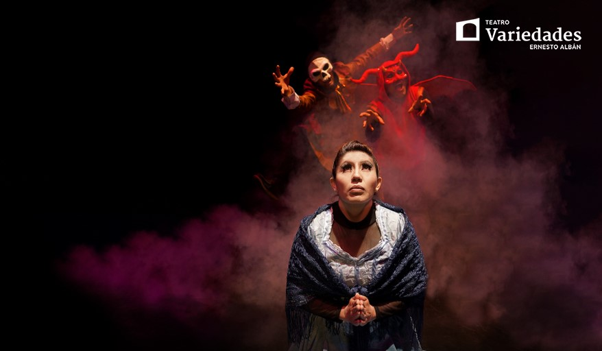

- 

Descubre la Oscura Historia de la Casa 1028 en el Corazón de Quito
La Casa 1028 tiene una larga historia que se remonta al siglo XIX. Según los relatos, esta vivienda perteneció a una influyente familia de la época. Con el paso del tiempo, los dueños originales desaparecieron bajo circunstancias misteriosas, dejando la casa en un estado de abandono. A partir de ese momento, los vecinos comenzaron a reportar sonidos inexplicables, apariciones y eventos sobrenaturales que parecían indicar que la casa estaba embrujada.

Los Fenómenos Paranormales
A lo largo de los años, la Casa 1028 ha sido testigo de eventos inquietantes:
Sombras en las ventanas: Muchas personas afirman haber visto siluetas moviéndose dentro de la casa, a pesar de que está deshabitada.
Objetos que se mueven solos: Testimonios cuentan que muebles y objetos cambian de lugar sin razón aparente.
Voces y susurros: Durante la noche, algunos aseguran escuchar voces que provienen del interior de la casa, aunque no hay nadie allí.
Sensación de ser observado: Visitantes y curiosos reportan una extraña sensación de ser vigilados desde las ventanas.
Relatos 1028
¿Y la Casa 1028?

Aunque la Casa 1028 está abandonada, su leyenda sigue viva. Es un sitio de interés para los curiosos del paranormal, historiadores locales y turistas que buscan experiencias aterradoras. La fachada descuidada y las historias inquietantes la convierten en un lugar icónico dentro del patrimonio oscuro de Quito.